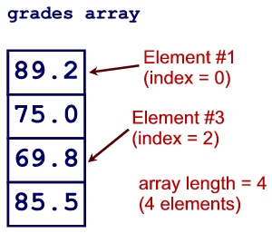
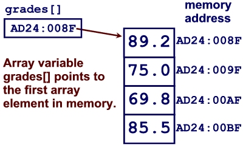

After reading the first few parts of Chapter 6, you should be familiar with the following terms and concepts:
A variable can hold only one value at any given time. This isn't really a problem in most of our programs, since we usually declare as many variables as we need to store values. However, sometimes this can be a limitation that causes problems in your program solutions. An example can be a program that records grades for a set of four courses and displays only those courses that are above the average:
int NUM_COURSES = 4 double grade1 = 0 double grade2 = 0 double grade3 = 0 double grade4 = 0 double totalGrade = 0 double avgGrade = 0 Print "Enter first grade: " Get grade1 Print "Enter second grade: " Get grade2 Print "Enter third grade: " Get grade3 Print "Enter fourth grade: " Get grade4 avgGrade = (grade1 + grade2 + grade3 + grade4) / NUM_COURSES Print "Average: ", avgGrade Print "Grades above average:" If grade1 > avgGrade Then Print "Grade #1: ", grade1 If grade2 > avgGrade Then Print "Grade #2: ", grade2 If grade3 > avgGrade Then Print "Grade #3: ", grade3 If grade4 > avgGrade Then Print "Grade #4: ", grade4
This code segment gets the four course grades as input from the user and, after obtaining all four grades, the calculates and displays the average of the four grades.
This simple solution works fine, but what if you wanted to use the same program to calculate another student's average with six courses? What if you wanted to work this program for all your courses in your entire program upon graduation? You would have to keep adding extra variables each time you wanted to run the program with a different number of courses. As a deployable program, this is not an option: You can't expect your users to alter the programming code whenever they want to enter a different number of grades.
Arrays help solve this problem. An array is similar to a variable, except that it can hold more than one value. An array is made up of a set of "slots" or elements, where each element holds one value. For example, an array with 4 elements can hold four different values:
To access an element of an array, whether to place a value in the array or read a value from the array, you need to specify which of the elements you want to access. For example, do you want to place a new value in the third element or do you want to print the value in the last element? You identify the element by its index or subscript. The element's index is its position or slot number in the array. For example, in our grades array above, the value 75.0 is element #2.
In Java, array indexes always start at 0, so the first element in the array actually has an index or subscript of 0, the second element has a subscript of 1, and so on. The length, or number of elements, in the array is always one more than the highest index value. For example, the grades array has a length of 4 and its highest index value is 3. The grades array's first index value is 0.
Question: What is the length of an array who's indexes go from 0 to 10?
To use an array in Java, you have to declare or define it, just as you would with any other variable. The difference is that you have to use the square brackets [] to show that you are declaring an array:
double[] grades;

This statement declares an array called "grades" that will hold a set of double values. This array variable is currently not pointing to anything; the variable is not really empty, it just hasn't been given an array yet. In other words, we have not yet allocated storage for the array; we've only just indicated that this variable will eventually point to an array of double values.
To create the array and allocate storage for the array, you need to specify the type of data the array will hold, and the length, or number of elements, in the array. This next statement creates and allocates storage for an array of 10 double values, and assigns that array to the grades array variable:
grades = new double[10];
This grades array will have indexes from 0 to 9, because we have defined it to have 10 elements. If we wanted to, we could have declared the array variable and allocated storage for the array in one statement:
double[] grades = new double[10];
In this case, we've created an empty array of doubles with storage for 10 elements and stored a reference to that array in the variable grades.
Whether you declare the variable and create the array in one statement or in two statements depends on the nature of your program. If you happen to know how many elements the array will need, you can declare it and allocate storage for it right away. However, this won't always be the case, as we'll see with some of our examples in the next few sessions.
To access an array in Java, you specify the subscript or index in the square brackets:
// stores values in all the elements grades[0] = 89.2; grades[1] = 75.0; grades[2] = 69.8; grades[3] = 85.5; // prints the value in the third element: JOptionPane.showMessageDialog(null, "Grade #3: " + grades[2], "Grade", JOptionPane.INFORMATION_MESSAGE);
1. Do each of the following exercises in your textbook on page 225: 6.3, 6.4, 6.5, 6.6, 6.7, 6.8
2. For each of the following, declare an array with an appropriate name and type and allocate an appropriate amount of storage.
3. Fill in the elements for the values[] array (it has 10 elements) as the following code executes:
int counter = 1; values[0] = 10; values[counter] = counter; counter++; values[5] = counter; values[9] = values[5] + counter; values[counter] = values[9] - values[1]; values[9] += ++counter;
Array: values[10]
Arrays are useful when you want to process a list of data, such as a list of grades. If you wanted to total or sum the grades in the list, you might think to add all the array elements together:
totalGrade = grades[0] + grades[1] + grades[2] + grades[3];
This works, but what if your array had 10 elements? What if your array had 100 elements? There is a more efficient way of performing operations on every element in an array: use a loop.
Loops work well when processing an array because you can start at element 0 and repeatedly perform an operation on every element in the array until you get to the last element. To make this work, you need to know the length of your array and you need a counter (or just use a for loop):
for (int i=0; i<grades.length; i++) totalGrade += grades[i];
Notice that in the loop, my loop condition is i<grades.length. An array contains a public attribute called "length" which always contains the number of elements in the array. Do not confuse this with a String object's length() method! These are not the same thing! grades.length is referring to the value in the length attribute of the grades array.
The statement totalGrade += grades[i]; is accumulating the grades from each element in the array. For the first iteration of the for-loop, the counter i is 0, so in this case, the compiler would be totalGrade += grades[0];. For the second iteration of the array, the counter i is 1, so the compiler would read totalGrade += grades[1];. For the third iteration of the array, the counter i is 2, so the compiler would read totalGrade += grades[2];, and for the last iteration, the counter i is 3 so the compiler would read totalGrade += grades[3];. After this, the counter is incremented to 4. The condition states that the loop terminates when the counter i is no longer less than grades.length (which has a value of 4). Since the counter i's value of 4 is no longer less than the grades.length value of 4, the loop ends. At this point, totalGrade holds the sum of all the elements in the array.
4. Do exercise 6.9 on page 225 of your textbook.
The for-each loop is available in many languages, including Java, although its syntax varies. The for-each loop is a for-loop that was created specifically to iterate through arrays and other collection objects. The general syntax is:
for (arrayDataType element: arrayVariable) {
// refer to this element as "element"
}
Here, arrayDataType is the data type of the array you'd like
to process.
"element" is the variable that holds the current array element
value for each iteration.
Together, arrayDataType element is a declaration for a temporary variable that is local to the for-each loop. This variable will always contain the current element's value.
After the colon, you place the name of the array you're iterating through.
Example:
for (double g: grades) {
System.out.println(g);
}
In this example, we iterate through each element in the grades array and print the element values on the screen.
Note that with a for-each loop, you can only READ from the array, you can't write to the array.
1. Write the code to display the values[] array (from the previous exercise) backwards.
2.a. Write a program that uses a char[] array to store the characters in a sentence. Ask the user for a sentence, and then store that string into the char[] array.
2.b Modify the above program to do a search/replace for one letter in the char[] array. Ask the user what letter they'd like to replace, and then the letter they'd like to replace it with. After doing the search/replace, display the sentence.
3. Record 10 integer values from the user and store them in an array. After recording the 10 values, calculate and display:
4. Find out how often the numbers from 1 to 10 are generated randomly. Declare an array to hold 10 integer elements. Generate 100 random numbers from 1 to 10 inclusive, and use the array to keep track of how many times each number occurs. For example, if the first number generated is 9, add 1 to the 9th element of the array. If the second number generated is 3, add 1 to the 3rd element of the array. If the third number generated is 9, add another 1 to the 9th element of the array. After 100 numbers have been generated, each element of the array will hold the number of times that value was generated. Display the array.
In this example, we're using the array as a frequency table to keep track of the frequency of each of the 10 numbers.
5. A small school is keeping track of the number of cans recycled for it's grade 1, 2, and 3 classes. Each time students bring in cans, the number of cans are counted and added to the total for that student's class or grade.
Use an array to keep track of the totals for each of the three grades (therefore, the array should have 3 elements). The user will be repeatedly prompted to enter the grade number, and the number of cans brought by a student, until they decide to quit. For each number of cans entered, add that number to the total for that grade (e.g. the proper array element).
After the user is finished entering data, display the totals for the three grades.
6. Ask the user to enter five integer values. Store the values in an array and then determine if the values were entered in ascending order. Display a message indicating whether they are sorted or not.
7. Do each of the following programming exercises on pages 227-228 of your textbook: 6.2, 6.3.